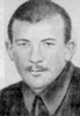

Шапошников Владимир Григорьевич
С сайта Астрономы: Биографический справочник

Шапошников Владимир Григорьевич (11.IV 1905 — 7.II 1942).Советский астроном. Р. в Курске. В 1924 окончил Московский землеустроительный техникум, в 1930 — Московский ун-т. В 1931—1934 — помощник зав. службой времени в Государственном ин-те геодезии и картографии (ныне Центральный научно-исследовательский ин-т геодезии, аэросъемки и картографии), в 1938 — зав. службой времени Ташкентской обсерватории, с 1940 до июля 1941 работал в Симеизской обсерватории. С июля 1941 участвовал в Великой Отечественной войне, был ранен, после выздоровления вернулся на фронт, погиб в боях под Харьковом.Научные работы посвящены измерению времени и абсолютным определениям координат небесных светил. Разработал так называемый принцип зенитной симметрии ошибок измерения зенитных расстояний и предложил построить на этой основе систему склонений по данным каталогов различных обсерваторий. Эти исследования были продолжены пулковским астрономом Д. Д. Положенцевым, который на основе собранных Шапошниковым материалов вывел новую оригинальную систему склонений для эпохи 1920, реализованную в виде поправок к фундаментальному каталогу Л. Босса. Для осуществления наблюдений по методу Шапошникова на основе его рекомендаций была изготовлена серия советских зенит-телескопов ЗТЛ-180, установленных в Пулковской, Полтавской и Китабской обсерваториях, широты которых отличаются примерно на 10°. Дальнейшая реализация идей Шапошникова отражена в планах наблюдений советских астрометристов в Южном полушарии, а также на о-ве Шпицберген. Применение метода Шапошникова обеспечивает получение результатов высокой точности в отношении как случайных, так и систематических ошибок.